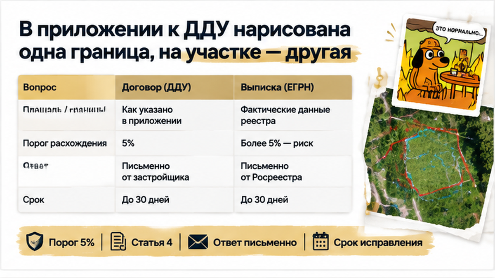

После подачи документов на регистрацию семья получила выписку ЕГРН. В день проверки перед приёмкой положили её рядом с приложением к ДДУ. И вместо разговора о переезде пришлось разбираться с землёй.
В реестре — 10,5 сотки. Недостача относительно договора — 12,5%. Причём дело не только в площади: граница в ЕГРН смещена относительно договорной схемы. На спорной линии стоит соседский забор. Получается, передают не совсем тот участок, который семья видела в приложении.
Обычный покупатель смотрит: дом готов, двор есть, ограждение стоит. Что ещё проверять? Профессиональный вопрос другой: совпадает ли то, что показывают на месте, с тем, что обязались передать по документам? Здесь такого совпадения не получилось.
Я бы не начинал с требования к соседу передвинуть забор. Сначала нужно установить причину расхождения. Ошибка в сведениях, неверная схема в приложении, спор о расположении границы — это разные задачи. По одной выписке нельзя назначить виновного или обещать, что недостающую полосу удастся вернуть.
И выписка нужна именно на землю. Документы на дом могут выглядеть аккуратно: площадь совпала, объект учтён. Но это не ответ на вопрос, какой двор покупатель получает вместе с ним. Земля здесь не бесплатное дополнение к фасаду, которое можно принять «как получилось».
С марта 2025 года для сделок с землёй требуются установленные в ЕГРН границы. Только наличие записи и исполнение договора — разные вещи. Участок может быть учтён, а его параметры всё равно расходиться с обещанными. Об этой разнице между готовностью сделки и содержанием документов рассказываю в истории, где строка в ЕГРН помешала регистрации после одобрения ипотеки.
Ответ застройщика короткий: «Подпишите акт, домежуем потом».
Для семьи это соблазнительный выход. Дом готов. Ипотека уже есть. Хочется наконец получить ключи, а не сравнивать линии на бумаге. Кажется, можно закрыть большую покупку сейчас, а небольшую техническую задачу оставить специалистам.
Но что именно застройщик собирается «домежевать»? Исправить сведения реестра? Уточнить положение границы? Каким документом подтвердит результат? Подпись под актом сама по себе землю не добавит. И согласие соседа, если оно потребуется, тоже не заменит.
Расскажу изнутри: в таком разговоре важнее не уверенный тон, а последовательность действий. За словом «домежуем» стоит кадастровый инженер, подготовка межевого плана, возможное согласование с соседями. Если согласия не будет, спор может дойти до суда. Поэтому обещать семье быстрое исправление одним заявлением здесь нельзя.

Ещё один тупик — искать «допустимый процент». Порог 5%, который обсуждают применительно к площади помещений, нельзя механически переносить на участок. Но и выявленная недостача не означает автоматического расторжения. Сначала смотрят условия конкретного ДДУ, характер несоответствия и возможный способ его устранения.
Сведения о земле в таком договоре — не декоративное приложение: требования к ним предусмотрены статьёй 4 закона № 214-ФЗ. Поэтому разговор нужно возвращать к обязательствам застройщика, а не к тому, насколько семье срочно нужны ключи.
Часть 5 статьи 8 того же закона предусматривает право отказаться от передаточного акта до устранения несоответствия требованиям статьи 7. Однако применимость этого основания к спору о земле нужно оценивать по документам. Это не универсальная кнопка «не подписываю», а повод оформить расхождение и свои требования письменно.
Я бы до завершения приёмки запросил объяснение причины, способ исправления и срок. Не просто «всё сделаем», а понятный ответ: кто делает, что меняется и чем это будет подтверждено. С таким ответом уже можно принимать решение. С устным «потом» семья оставалась бы с тем же нерешённым вопросом, только после подписи.